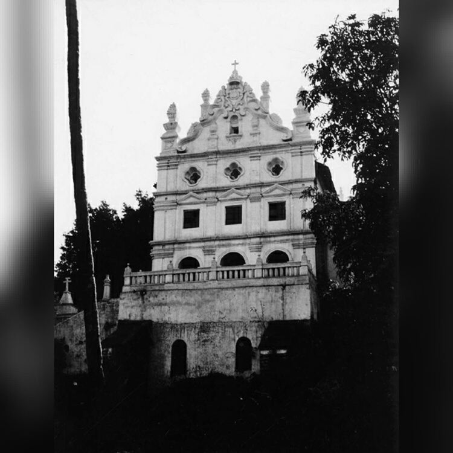
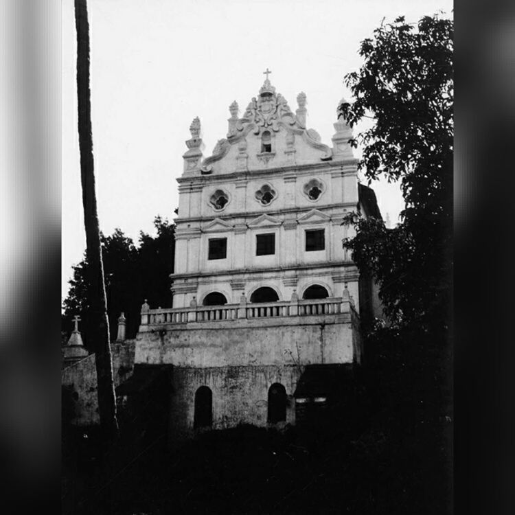
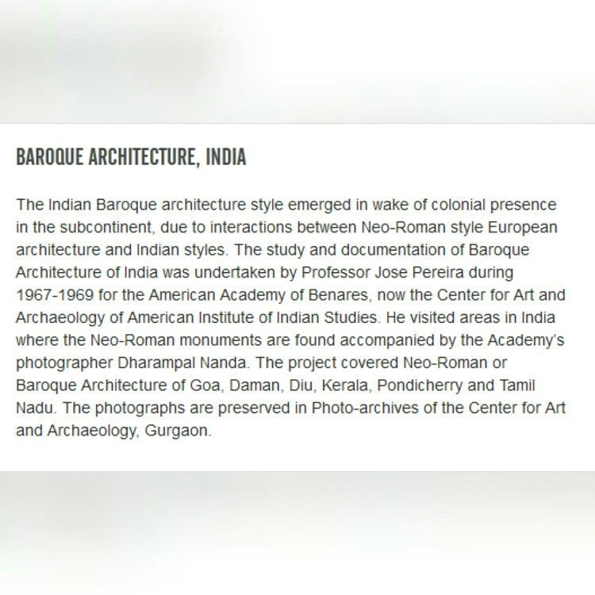
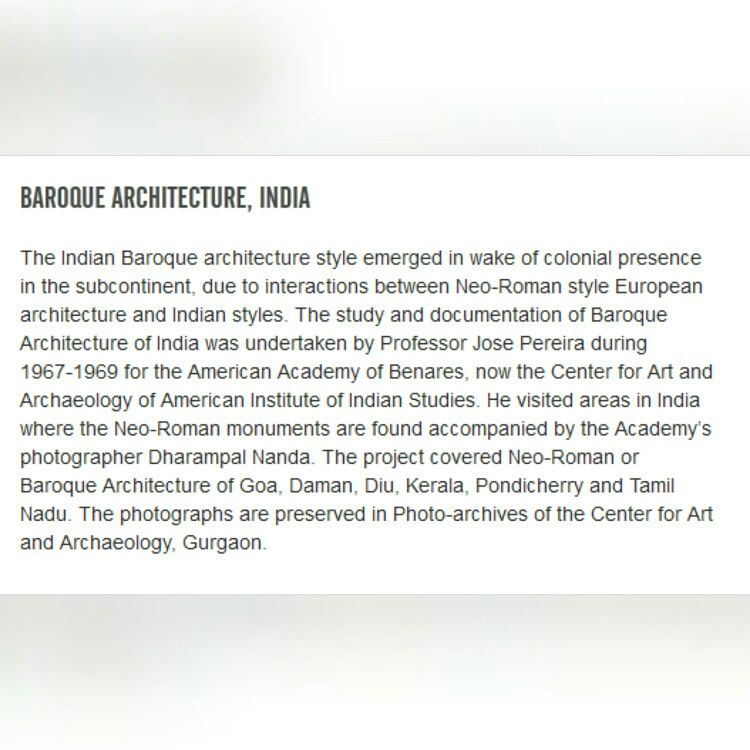

Mother of God Church, Pomburpa
Church Archives
Chapels of pomburpa
Boa Viagem Kopel (Chapel of Our Lady of Good Journey)
1500 meters in distance is the chapel of Boa Viagem in the Palmar waddo. This chapel was blessed on 10th May 1938 and it stands on the bank of the river. In front of the Chapel is an ark on which it is written: N. S. de Boa Viagem. And on the ark is a statue of Our Lady of Good Journey.
As one enters the chapel inside on the left side is a stone stating—DONATED BY DAUGHTER AND SON-IN-LAW / OF / MR. FRANCISCO OAÕ PEREIRA / AND / MRS. MARY PEREIRA.
The center altar holds the statue of Our Lady of Good Journey, below that at the left is a statue of St. Francis Xavier and to the right is St. Sebastian. According to Fr. Moren, there were many fisher-man in that area and when they would go out to catch fish they would always have problems, like they would get less fish or their canoes would sink and thus they built this chapel dedicated to Our Lady of Good Journey, for their protection and they would look up to the chapel when in trouble.
Sant Sebastiao Kopel (Chapel of St. Sebastian)
this chapel lies in Morodd waddo-3500 meters away from the church. From 26th January 1913 the village was given permission to celebrate this saint's feast. There is only one altar of St. Sebastian: apart from that on the left is a statue of St. Francis Xavier and on the right St. Anthony.
Augustias Kopel (Augustias Chapel)
the chapel is in Golna Waddo, 2,600 meters away from the church, the main altar is dedicated to Our Lady of Augustias; It is a very old chapel the front and the corridor of the chapel was made in 1874 and the present chapel was blessed on 6th November 1897, the chapel was enlarged and renovated in 1980.
The village church and its history
THE VILLAGE CHURCH AND ITS HISTORY
The Beginning
"The Church of our Lady of Candeia sits imposingly on a hillside looming over the Mapusa river and looking eastward at the island of Charao and the beautiful country side around." (Furtado, 1985)
Records state that there were seven temples in Pompburpa in the past; of which two i.e Santeri(Shantadurga) and Ravalnath are in the Bicholim taluka today. The family name of the Gaunkaris was then Kamat and there existed seven guilds or clans in the Gaunkari; while today only four remain. When Christianity began to spread in Chodna there were some who did not want to convert so they left the place and settled in Pompa. However in a few years Christianity to spread also in Pompburpa. (De Souza) The village is not so big and the panchayat comprises Ecoxim, Pompburpa and Olaulim wards though each falls in a different parish. A part (Ecoxim, which is largely Hindu) of Pompburpa belongs to the Sadde-tin firgozo as mentioned before.
There is a statue of Mother of God in the Pompa Church which is dated 1590 stating that it was established during this year, meaning Christianity had already
been spread in the village before 1590. And much before Pompa it is seen that Saloi(Salvador do Mundo) church was established in 1565, so probably the religion began to spread from then and finally reached Pompburpa. According to Fr. F. X. da Costa(Anais Franciscanos em Bardes, Nova Goa, 1926), the Pompburpa Church was established in 1590 and the parish comprised of two gaunkari clans or groups i.e. Pompburpa and Olaulim; today Olaulim has its own church. The Church completed four centuries in 1990 and it was then that a slab was put on the right side of the main church door which reads:
CHURCH—A GIFT OF LUIZA DA MADRE DE DEUS AND / HER / MOTHER ANA DE S. MARIA- DIED: 11.06.1604.
One the left there is another slab:
ECCLESIA/B.M.V. MATRIS DEI/ 1590 A.D./ POMBURPA.
Most of the churches in Bardez were built by way of donations from the Comunidades and the public. As records tell us the Pompburpa church was not so. It was built by two Portuguese ladies Louisa da Madre de Deus and her mother An'na de Santa Maria. Prior to building of this church the villagers were affiliated to the church of Salvador-do-Mundo. Even up to this date the Comunidade of Serula (Saloi) pays for the salary of Peddo (grave digger) and the other members working for the Pompburpa church. The church was dedicated to Mother of God (Dev-Matek: Mae-de-Deus); the church got its name for its
donators "Madre de Deus', however the patron of the church is "Candeia or Candelaria" i.e. Our Lady of Candles. The villagers probably celebrated the church feast on 2nd Feburary which also happens to be the feast of Our Lady of Candles and thus it probably was passed down from generation as Feast of Candeia. (De Souza) Agustino Pereira an elder of the village states:
"Our church name was actually Mae de Deus - Mother of God. However the feast was always celebrated by the Confraria - 'Irmao' of the church and thus it began to be called as 'Candeia' feast. Even till today the feast is celebrated by the Confraria. The foundation of the church was put and the name of the church was given on 1st January on the feast of Presentation of the Lord. And even that feast is still celebrated, however not with the same pomp and grandeur as the feast on 2nd February."
The same Portuguese lady later also built a Hospico or Nivas for the Franciscan missionaries to stay. All this was then later given with proper documentation and right to the Franciscans on 11 June 1604; almost 14 years later.
In 1766 when it was decided to replace the Franciscans in Bardez with the Goan secular clergy they refused to leave and appealed to the Court of Lisbon. However in the same year, Fr. Joao Alvares, a secular priest, was appointed the pastor. He did not last long in the village because he was implicated in the Conjuração dos Pintos and exiled in Portugal. (D'Souza, 1997)
Antique throne of Pomburpa
Here is the extracted text from the image:
Every time parishioners of Pompburpa go to the church they are reminded of Pope John Paul II. Behind the altar stands a magnificent 19th century chair on which the Pope had rested his frame during the nearly two-hour long Eucharistic service attended by a two lakh strong congregation on Feburary 6, 1986 at Campal. (Fernandes, 2008).
The Mother of God church is hoisted on the edge of the hill as if placed on a pedestal. As you enter the church you discover this unique piece of furniture made of Indian rosewood placed in front of the main altar, And for the moment everything else seems to pale into insignificance.
Often referred to as the antique throne of Pompburpa the chair has a guilded backrest atop of which is the papal insignia, just below is the symbol of the Holy Spirit and the emblem of the church.
Embossed around the velvet cushion embedded in the backrest are portraits of the twelve apostles in coloured shades. The motifs of entwined vine foliage and two intricate rococo flaps on both sides are striking. Its legs are equally ornate and curved. (Fernandes, 2008)
This Chair is made somewhere during 1870-1880, as the written sources state. The chair was made by a famous carver Menu Gannesh Zo of Ribander. The following inscription can be found at the back of the chair: Made in 1870-80 of Indian Rose-wood by Menu Gannesh. Repairs were later done by Joao de Souza from Panjim.
(De Souza)
Parish Priests
Mass Timings: Mon-Sat 7.00 AM , Sunday :7.00 AM and 9.00 AM
Holy hour on first friday of the month at 7 PM


 



 
